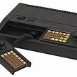

<!DOCTYPE html>

<html>
<head>
 <title>New ZeroNet site!</title>
 <meta charset="utf-8">
 <meta http-equiv="content-type" content="text/html; charset=utf-8" />
 <base href="" target="_top" id="base">
 <script>base.href = document.location.href.replace("/media", "").replace("index.html", "").replace(/[&?]wrapper=False/, "").replace(/[&?]wrapper_nonce=[A-Za-z0-9]+/, "")</script>
</head>
<body>

<div id="out"></div>

<script type="text/javascript" src="js/ZeroFrame.js"></script>

<script>

class Page extends ZeroFrame {
	setSiteInfo(site_info) {
		var out = document.getElementById("out")
		out.innerHTML =
			"Page address: " + site_info.address +
			"<br>- Peers: " + site_info.peers +
			"<br>- Size: " + site_info.settings.size +
			"<br>- Modified: " + (new Date(site_info.content.modified*1000))
	}

	onOpenWebsocket() {
		this.cmd("siteInfo", [], function(site_info) {
			page.setSiteInfo(site_info)
		})
	}

	onRequest(cmd, message) {
		if (cmd == "setSiteInfo")
			this.setSiteInfo(message.params)
		else
			this.log("Unknown incoming message:", cmd)
	}
}
page = new Page()

</script>

</body>
</html>
<!DOCTYPE html>
<html>	
<head>	
<title>Exiled Resistance Gamers Pokemon Mini</title>
"<br>- Peers: " + site_info.peers +
			"
</head>
<body bgcolor="black">	
<br>
<br>
<br>

<center>

</center>
<center>
<br>
<br>
<font color="white">  welcome to Exiled Resistance Gamers emulation archive - VTech CreatiVision</font>
<br>
<a href="http://127.0.0.1:43110/18QTZ451KzvydQdCPS8KT4zob1hPw4zkRD/Nintendo/Nintendo.html" <font color="white">back</font>
<br>
<a href="http://127.0.0.1:43110/18QTZ451KzvydQdCPS8KT4zob1hPw4zkRD/index.html" <font color="white">home</font>

<br>
<br>
<br>
</center>
<center>

<br><br>
<br><a href="VTech - CreatiVision\Air Sea Attack (Europe, Asia).7z" <font color="green">Air Sea Attack (Europe, Asia).rom</font>
<br><a href="VTech - CreatiVision\Astro Pinball (Europe, Asia).7z" <font color="green">Astro Pinball (Europe, Asia).rom</font>
<br><a href="VTech - CreatiVision\Auto Chase (Europe, Asia).7z" <font color="green">Auto Chase (Europe, Asia).rom</font>
<br><a href="VTech - CreatiVision\Chopper Rescue (Europe, Asia) (Alt 1).7z" <font color="green">Chopper Rescue (Europe, Asia) (Alt 1).rom</font>
<br><a href="VTech - CreatiVision\Chopper Rescue (Europe, Asia).7z" <font color="green">Chopper Rescue (Europe, Asia).rom</font>
<br><a href="VTech - CreatiVision\Crazy Chicky (Europe, Asia).7z" <font color="green">Crazy Chicky (Europe, Asia).rom</font>
<br><a href="VTech - CreatiVision\CreatiVision Basic (Europe, Asia).7z" <font color="green">CreatiVision Basic (Europe, Asia).rom</font>
<br><a href="VTech - CreatiVision\Deep Sea Adventure (Europe, Asia).7z" <font color="green">Deep Sea Adventure (Europe, Asia).rom</font>
<br><a href="VTech - CreatiVision\Hapmon (Europe, Asia).7z" <font color="green">Hapmon (Europe, Asia).rom</font>
<br><a href="VTech - CreatiVision\Locomotive (Europe, Asia).7z" <font color="green">Locomotive (Europe, Asia).rom</font>
<br><a href="VTech - CreatiVision\Mouse Puzzle (Europe, Asia).7z" <font color="green">Mouse Puzzle (Europe, Asia).rom</font>
<br><a href="VTech - CreatiVision\Music Maker (Europe, Asia).7z" <font color="green">Music Maker (Europe, Asia).rom</font>
<br><a href="VTech - CreatiVision\Planet Defender (Europe, Asia) (Alt 1).7z" <font color="green">Planet Defender (Europe, Asia) (Alt 1).rom</font>
<br><a href="VTech - CreatiVision\Planet Defender (Europe, Asia).7z" <font color="green">Planet Defender (Europe, Asia).rom</font>
<br><a href="VTech - CreatiVision\Police Jump (Europe, Asia).7z" <font color="green">Police Jump (Europe, Asia).rom</font>
<br><a href="VTech - CreatiVision\Soccer (Europe, Asia).7z" <font color="green">Soccer (Europe, Asia).rom</font>
<br><a href="VTech - CreatiVision\Sonic Invader (Europe, Asia).7z" <font color="green">Sonic Invader (Europe, Asia).rom</font>
<br><a href="VTech - CreatiVision\Tank Attack (Europe, Asia).7z" <font color="green">Tank Attack (Europe, Asia).rom</font>
<br><a href="VTech - CreatiVision\Tennis (Europe, Asia) (DSE).7z" <font color="green">Tennis (Europe, Asia) (DSE).rom</font>
<br><a href="VTech - CreatiVision\Tennis (Europe, Asia) (VTL).7z" <font color="green">Tennis (Europe, Asia) (VTL).rom</font>
<br><a href="VTech - CreatiVision\[BIOS] VTech CreatiVision (Europe, Asia).7z" <font color="green">[BIOS] VTech CreatiVision (Europe, Asia).rom</font></center>
</body>
</html>